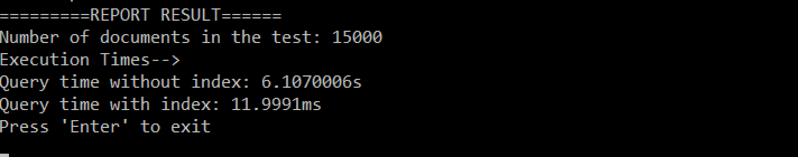
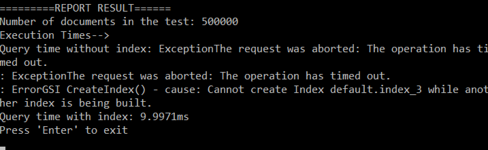

In Couchbase 4.0 we introduced N1QL query language: a flexible query language that brings SQL-like query to JSON documents.
Whenever we talk about N1QL the conversion always opens up to questions about performance: what to expect in terms of performance and what options there are to optimise the queries.
The first answer to give is most likely "it depends on your use case and the shape of your data", but honestly that does not help much.
This blog post tries to answer the performance question in a bit more detail and give some actual numbers in terms of execution time and show how to optimise the queries to get more performance.
Couchbase uses N1QL in a number of internal tools and applications and last week I made a very important observation!
When using N1QL it's extremely important to create indexes!
In a small application, adding one index to one attribute changed the execution time from +2min. to 2 seconds. No changes were made to the query itself, the only change was the index!
Note: The above query time is not for a single N1QL query but for a sequence of multiple queries in the application on a relatively low-powered VM.
The expected execution time for a query greatly depends on query complexity and the system, the Couchbase Server and hardware.
Therefore to to give a more accurate answer a test bench is needed. A well defined set of tests that can be run on different systems to reveal the actual performance metrics for a given setup. In this way a measurement can be given for an actual system and query.
So, instead of just claiming that N1QL is fast, we can test it on an actual system: your own setup!
First, performance is challenging. It's a challenge to measure, but the real issue is that often we forget WHAT we are testing and therefore also forget when to start the "stopwatch" and when to stop it again.
Therefore, when running a test it's important to define what the test is intended to measure and how to measure it in a fair, repeatable and comparable way.
In our case we would like to measure the difference in execution time for a pre-defined N1QL query when using an index and when not using an index.
We are only interested in the actual execution time for the N1QL query, independent of any platform specific delays such as: network delays, bootstrap time, SDK performance, setup/cleanup times etc.
In other words, for this particular performance test, we are ignoring anything other than the 'query execution time' in the two scenarios!
Luckily measuring the execution time for a query happens to be very easy! Every Couchbase Server response is returned with a Measure object that contains all the metrics about the request.
"Metrics":
{
"elapsedTime": "1.7900093s",
"executionTime": "1.7900093s",
"resultCount": 0,
"resultSize": 0,
"mutationCount": 0,
"errorCount": 0,
"warningCount": 0
}The above metrics contains executionTime and this value represents the execution time on Couchbase Server, independent of network latency, platform code execution time etc. It is exactly what we need!
Before running any queries we need some test data to run the queries against. How much test data we have can greatly influence the test results and therefore this should be configurable for every test run.
How we create the test data is not at all important to our test nor is the time it takes to create it. What is important is the shape of the data as it should reflect real data, as best as possible. Other than that we have a high level of freedom in how to create it and how long it takes.
In most cases it's fair to assume that documents will vary in size and shape. Couchbase is not affected by the shape of the document. Couchbase only "sees" a key pointing to a value. The size is a different topic and therefore the documents in the data-set should vary in size.
Mimicking a few different documents can be achieved by changing a type attribute in the JSON document. Again shape is not important to Couchbase, but by changing the type attribute we can mimic different types of documents even though they share the same document structure.
The test data criteria can now be boiled down to:
type attribute that can be changed to mimic different documents in the data-set.With that in mind, let's define the JSON document structure as follows:
{
"Id": "GUID",
"type": "perfTest",
"IndexedType": "person + #",
"NoneIndexedType": "person + #",
"Day": 1->29,
"Month": 1->12,
"Year": 2015,
"TextSmall": "100->250 random chars",
"TextMedium": "200->500 random chars",
"TextLarge": "700->1000 random chars",
"TextExtraLarge": "1200-1500 random chars"
}The above document structure represents the test document. The size of each document can greatly vary as all the Text... attributes are given a random size and value. By having this random sizing and content each document best mimics real documents in a real system.
A real system is likely to contain more than one document type and by changing the value of IndexedType the same document structure can mimic different document types in the system.
The attribute IndexedType can take a few different predictable values in the form: person1, person2, person3 and person4. The four different values are used to mimic four different documents. It's possible to add more 'types' but for our test four is sufficient.
The type attribute allows for easy search and deleting of the test documents when the test is completed, and is always given the value perfTest.
Loading the documents into a bucket in Couchbase Server can be done in many ways. One option would be to pre-create documents and load them into the bucket using a combination of the cbbackup and cbrestore tools.
Another option would be to create the test data on the fly. I guess you can likely come up with other ways to load the data. Just remember this step is not performance critical! Do whatever is easiest.
With the above definitions in place, we are ready to define the steps for the test bench:
Although the N1QL data manipulation features are still in preview they can be used today. That makes data clean-up very straight forward:
"DELETE FROM `default` d WHERE d.type = 'perfTest' RETURNING d.IdIndexes can be deleted using the DROP command:
DROP INDEX `default`.`index_1` USING GSI;
DROP INDEX `default`.`index_2` USING GSI;
DROP INDEX `default`.`index_3` USING GSI;Couchbase Server will return an error if the DROP command is executed against an index that does not exist. This can be overcome with a check to whether or not the index exists:
SELECT * FROM system:indexes WHERE name='index_1';
SELECT * FROM system:indexes WHERE name='index_2';
SELECT * FROM system:indexes WHERE name='index_3'; It would probably be possible to continue using the N1QL data manipulation features to create a random data set, but also a bit more involved than creating the documents in code.
The test bench code will be implemented using .NET and the documents will be generated using the following C# snippet:
private static void GenerateDocuments()
{
int rounds = numberOfTestDocuments > batchSize ? numberOfTestDocuments / batchSize : 1;
int testDocsPerLoop = rounds > 1 ? batchSize : numberOfTestDocuments;
Random ran = new Random();
for (int n = 0; n < rounds; n++)
{
var docs = new Dictionary<string, dynamic>();
for (int i = 0; i < testDocsPerLoop; i++)
{
string id = Guid.NewGuid().ToString();
string postFix = ran.Next(1, 4).ToString();
var doc = new
{
Id = id,
type = "perfTest",
IndexedType = "person" + postFix,
NoneIndexedType = "person" + postFix,
Day = ran.Next(1, 29),
Month = ran.Next(1, 12),
Year = "2015",
TextSmall = new string(
Enumerable.Range(0, ran.Next(100, 250)).Select(item => (char)ran.Next(44, 126)).ToArray()),
TextMedium = new string(
Enumerable.Range(0, ran.Next(200, 500)).Select(item => (char)ran.Next(44, 126)).ToArray()),
TextLarge = new string(
Enumerable.Range(0, ran.Next(700, 1000)).Select(item => (char)ran.Next(44, 126)).ToArray()),
TextExtraLarge = new string(
Enumerable.Range(0, ran.Next(1200, 1500)).Select(item => (char)ran.Next(44, 126)).ToArray())
};
docs.Add(id, doc);
}
ClusterHelper
.GetBucket("default")
.Upsert<dynamic>(docs);
Console.Write(".");
}
}The method uses an inner and outer loop. The inner loop defines the upload batch size. The outer loop defines the number of batches to upload to Couchbase Server.
The loops are added to ensure that the program does not run out-of-memory when uploading a large data-set.
After uploading the test documents to Couchbase Server it's time to run the first part of the test and log the execution time:
SELECT * FROM `default` WHERE IndexedType='person3' AND Month > 5 AND Day < 20Depending on the number of documents used in the test it's likely that this query will timeout. On my system; running this query against 500K documents, results in a timeout. 15K documents have a query time of around 15s.
Now it's time to create the indexes:
CREATE INDEX `index_1` ON `default`(IndexedType) USING GSI;
CREATE INDEX `index_2` ON `default`(Month) USING GSI;
CREATE INDEX `index_3` ON `default`(Day) USING GSI;The CREATE INDEX command is synchronous and returns when the secondary index is created and ready. That means that this command can take a while to complete, depending on the number of documents in the test and the size of your machine.
Multiple vs one index: Having multiple independent indexes are beneficial if you search on each attribute in independent queries where other attributes are missing.
Having only one index however reduces the overhead of maintaining separate indexes and can simply cut down on resource requirements and also can speed up the query even further as it has the ability to find the items qualifying to all filter criteria in one shot.
Instead of the the three independent indexes we could use this:
CREATE INDEX `index_type_month_year` ON `default`(IndexedType, Month, Year) USING GSI;Or even:
CREATE INDEX `index_type_month_year` ON `default`(IndexedType, Month, Year) WHERE IndexedType='person3' AND Month > 5 AND Day < 20 USING GSI;However I find it more correct to have multiple indexes for this type of test. You can always run the test with a single index and measure the difference in execution time and use that measurement to make a final decision of what's best in your particular case.
After the indexes are created it's time to run the second part of the test and log the execution time:
SELECT * FROM `default` WHERE IndexedType='person3' AND Month > 5 AND Day < 20Please note: this is the exact same query as used in step 3. No changes have been made to the query itself.
Typical execution times on my system are between 4ms to 23ms! That's a big difference! But how does data-set size effect this measure? You will have to read on to get that answer.
Deleting all test documents, dropping indexes and bringing the system back to the known state before the test was run. It's the same as step 1.
You could argue that either step 1 or step 6 is not needed, but they are both very important. Just think about the case where a test run is interrupted (canceled, fails, etc.)
The final step and hopefully the most interesting step, the result.
Results from my system:


Summary of the results from my system:
MacBook Pro 16GB Memory, Couchbase Server running in Windows 10 using Parallels Desktop with 10 GB Memory (Couchbase Server has been granted 2 GB memory)
Observation, In terms of execution time there is no big difference from 15K documents to 500K documents when using an index.
Learning, using secondary indexes is really important and greatly helps query performance!
The source code can be found on GitHub:
The implementation tries to compensate for timeouts/errors and retries on operation failures and timeouts.
A timeout occurs quite often when using N1QL's beta command DELETE on a large data-set (500.000 documents). Remember this feature is still in preview and therefore this behaviour is not to be expected when it's released, but for now it's necessary to expect this behaviour and compensate accordingly.
What performance can you expect on your system? Well it depends! But now you can run the test code against your setup and get a better idea.
But one thing is sure! Don't forget to create those secondary indexes! They greatly improve performance! In terms of numbers, Indexes can improve performance by a factor 100 to 1000!
Using indexes does have an impact on the cluster's CPU usage, so it's worth considering exactly which indexes to implement and not create more than needed.
With that said; For a single line of code, that's really value for money ;)
CREATE INDEX `{INDEX_NAME}` ON `{BUCKET_NAME}`({ATTRIBUTE_NAME}) USING GSI;Feel free to post your test results in the comments below and help us all get a better understanding of the performance to expect from N1QL.